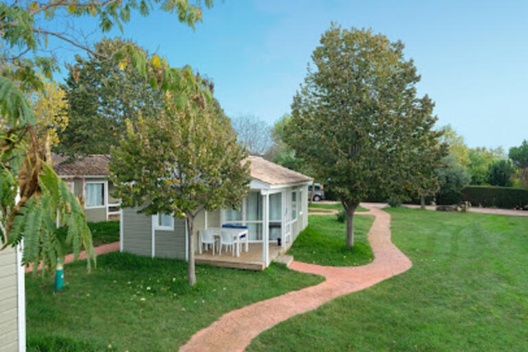

Servei · Mataró
El Càmping Barcelona està situat just al Mediterrani, amb unes vistes meravelloses al mar. Les activitats per a adults, i la piscina, es poden gaudir durant tota la temporada. Les activitats…